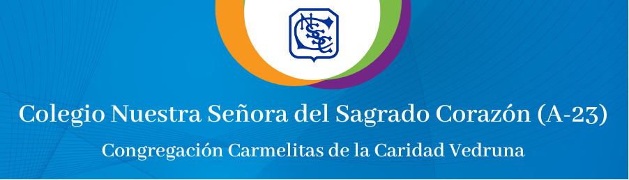
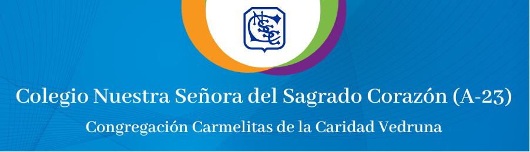

Nuestra historia. Memorias de los primeros 110 años del Colegio Nuestra Señora del Sagrado Corazón
El apostolado docente americano de las Hijas de la Madre Joaquina comenzó hace 110 años en la ciudad de Buenos Aires. En España,
la obra realizada era muy próspera y era esperable que se expandiera cruzando el Atlántico para seguir desarrollándose. En noviembre de
1912, un primer grupo de hermanas se subió a un gran barco y luego más de un mes de navegación arribó al Puerto de Santa María de los Buenos
Aires. Las tres pioneras fueron las RR.MM. Concepción Figuerola de Nuestra Señora de Loreto, Eustaquia de Echeverría de San Casiano y
Dolores Mascaró de Nuestra Señora del Carmen. Llegaron con sus pequeñas valijas llenas de sueños y proyectos, pero plantar la semilla de
este frondoso árbol Vedruna no fue una tarea fácil. Hoy sabemos que valió la pena, porque más de un siglo después sigue dando sus frutos de
amor: “educando en valores desde la vida y para la vida”.
.jpg)
.jpg)
El periplo las llevó a Paraguay y a Chile. También a Uruguay, Perú y Brasil. Pero el corazón siempre estaría en Buenos Aires, sede del Consejo de la Provincia de América. Para 1913 un nuevo grupo, ya más numeroso, de religiosas había llegado a Buenos Aires en el Vapor Patricio de Satrustegui. Entre ellas estaba la Madre Claudia Vacas del Sagrado Corazón, conocida siempre como la Madre Corazón, La Hermana Josefa Unanue de San Ignacio, la Hermana Carmen Navarra de San Estanislao, la Hermana María Luisa Caramé del Sagrado Corazón, la Hermana Dolores Cubí de la Santísima Trinidad, y la Hermana Eustasia Dueñas de la Presentación. Lograron alquilar un chalet de dos plantas, con palmeras y árboles frutales, en la calle Crámer 2005, en el barrio de Belgrano (en ese entonces, era una zona de casas- quintas y de veraneo para los habitantes pudientes de Buenos Aires).
El año escolar ya estaba iniciado y nadie conocía este nuevo instituto de enseñanza, pero en pocos meses llegaron a tener 14 alumnas inscriptas y ya para agosto contaban con la aprobación del Consejo Nacional de Educación para la sección primaria, con 26 alumnas. Entonces, oficial y felizmente, nuestro colegio había nacido y había que definir su nombre. La advocación fue elegida con la ayuda del Reverendo Padre Darner S. J.: Nomal No 10 “Juan Bautista Alberti”, ofreciendo en cuatro años el título de Maestra Nacional.
En poco tiempo la residencia de Crámer queda chica y se trasladan a la calle Vidal 2025. El nivel primario funciona aquí durante 8 años. En esta casa pudieron recibir a las 4 primeras alumnas internas, además de 50 alumnas externas y de otras 30 que asistían a lecciones particulares. Además, el colegio se incorpora al conservatorio de música “Tibaud Piazzini”.
.jpg)
.JPG)
La casa propia: Cramer 2370
En diciembre de 1919, en un remate público, se adquiere un inmueble situado en la calle Crámer compuesto por un palacete llamado “Las cuatro estaciones”, en la esquina de Olazábal y un edificio con clases donde funcionaba una Escuela Profesional, en Blanco Encalada. La adquisición se logró con algunos préstamos y una hipoteca en el Banco Hipotecario Nacional. En 1921 el colegio se traslada definitivamente a Crámer 2370. Pasaban los años, las alumnas crecían y el colegio también, por ello, en 1931 se pide al Ministerio de Educación la apertura de la sección secundaria oficial, incorporándose al Liceo Nacional de Señoritas Nº 2. El número de alumnas siguió creciendo y lo hizo aún más cuando en 1937 cuando se anexa a la Escuela Nomal Nº 10 “Juan Bautista Alberti”, ofreciendo en cuatro años el título de Maestra Nacional.
Por la importancia e incremento que iba tomando el Establecimiento Educativo fue preciso plantear la necesidad de construir nuevas aulas, nuevo comedor, dependencias y la Capilla. Con gran colaboración de la comunidad de Belgrano se inician las obras a fines de 1937
.jpg)
El R.P. Doglia S. J., Rector del Colegio del Salvador bendijo y consagró la piedra basal. La inauguración oficial fue recién en 1940 y contó con la bendición del Arzobispo de Buenos Aires Cardenal Copello. La nueva iglesia fue consagrada a Ntra. Señora del Carmen; Patrona de la Congregación. Desde entonces, la labor educativa y pastoral ha ido incrementándose y adaptándose a las necesidades de los tiempos, siempre con una misma mirada, la de nuestra Fundadora “La pedagogía del amor”.
.jpg)
Algunos momentos históricos
En 1943 se adquiere la Quinta de San Miguel, lugar de esparcimiento de alumnas y hermanas.
En 1949 se inaugura el Salón de Actos, que cuenta con capacidad para 600 personas y con un hermoso escenario. En 1951 se destinan dos amplios salones contiguos al salón de actos para instalar allí una selecta biblioteca. En 1971 es la apertura del Jardín de Infantes. En 1987 surgen los Matrimonios Vedruna, de la mano de la Hna. Anita Rodríguez. En 1992 se inician los Bachilleratos con orientación laboral en Informática y Comunicación Social. Este año egresa la última camada con ese título. En 1996 el colegio se transforma en mixto. Ese mismo año el nivel primario comienza a tener doble escolaridad. En 2001 egresa la primera promoción mixta del nivel secundario.
En 2013 el Colegio celebra con gran alegría sus primeros 100 años. Se continúa con el Proyecto “Fortalecimiento de Vínculos para una nueva Forma de Gestión” y comienza a funcionar el Equipo de Gestión Laical.
Hoy, el Carisma Vedruna continúa vivo en el Colegio, las tareas crecen, maduran, van cambiando de nombre con el tiempo, pero el Espíritu es siempre el mismo. La Acción Católica, los grupos Misionales, los grupos REMAR, las Misiones al interior del País, El Manso.
El legado de Santa Joaquina se sigue extendiendo y como “la alegría es la principal virtud” estamos celebrando felices y con gran gozo los 110 años de nuestro amado Colegio este año.
Hoy, el Carisma Vedruna continúa vivo en el Colegio, las tareas crecen, maduran, van cambiando de nombre con el tiempo, pero el Espíritu es siempre el mismo. La Acción Católica, los grupos Misionales, los grupos REMAR, las Misiones al interior del País, El Manso.
El legado de Santa Joaquina se sigue extendiendo y como “la alegría es la principal virtud” estamos celebrando felices y con gran gozo los 110 años de nuestro amado Colegio este año.
.jpg)